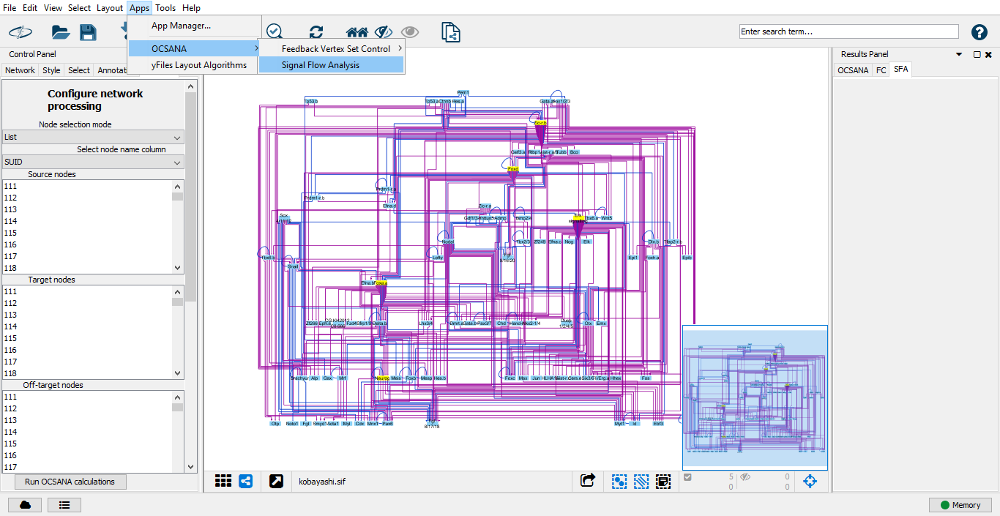
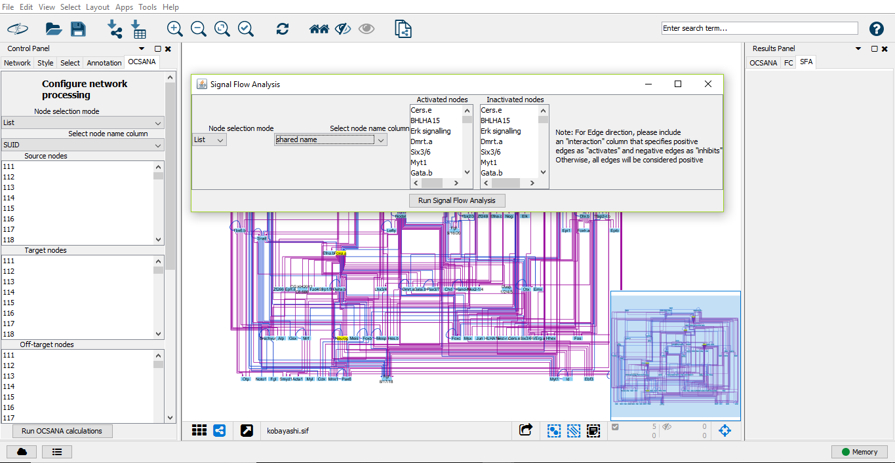
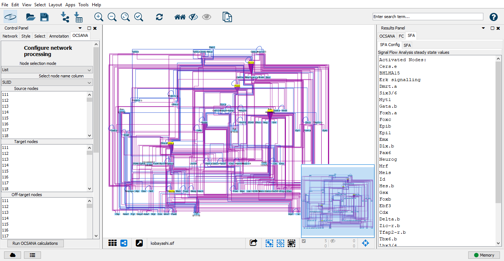
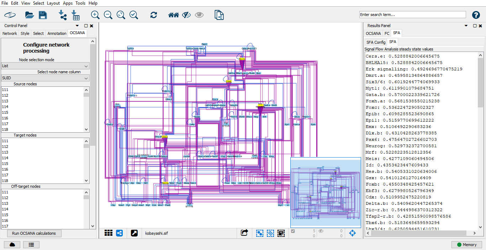

Performing Topological Estimation of Signal Flow with Signal Flow Analysis (SFA)¶
Running SFA in Cytoscape¶
After installation of OCSANA+ and loading of a network, you can select Signal Flow Analysis from the main toolbar>Apps>OCSANA
Configuring your SFA Run¶
After selecting an SFA option, a new pop-up menu will appear.
Node Selection Mode¶
Select whether you will enter a string of activated and inhibited nodes, or will click-to-select the nodes.
Select Node Name Column¶
This option allows you to select which column of the node attribute table will be used to identify network nodes.
Activated Nodes¶
The Activated nodes section allows you to specify which nodes will have a postive basal activity (activated state). The nodes can be selected manually from the list of nodes appearing in this section or by copying and pasting the list of desired nodes in the dialog window after clicking on the set source nodes button.
Inhibited Nodes¶
The Inhibited nodes section allows you to specify which nodes will have a negative basal activity (inhibited state). The nodes can be selected manually from the list of nodes appearing in this section or by copying and pasting a list of nodes in the dialog window after clicking on the set of target nodes button.
Edge Sign Configuration¶
To Configure edge signs, please include an “interaction” column that specifies positive edges as “activates” and negative edges as “inhibits.” Otherwise, all edges will be considered positive.
After you have configured your run, click “Run Signal Flow Analysis”
SFA Results¶
After the SFA run has completed, the results will be displayed in the OCSANA tabe of the Cytoscape Results Panel (right panel)
SFA Config¶
This subpanel displays the configuration set for this run (activated nodes, and inhibited nodes)
SFA¶
This subpanel contains the steady state log values for all network nodes.
